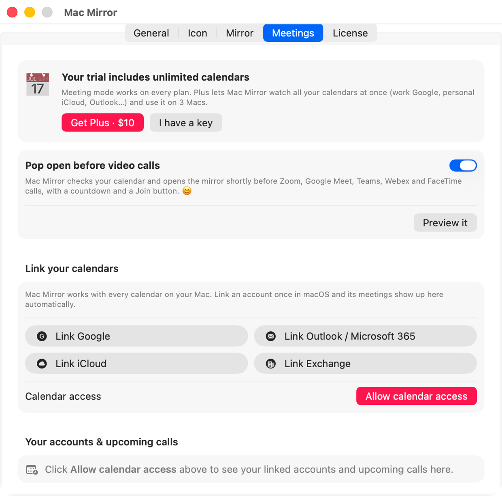
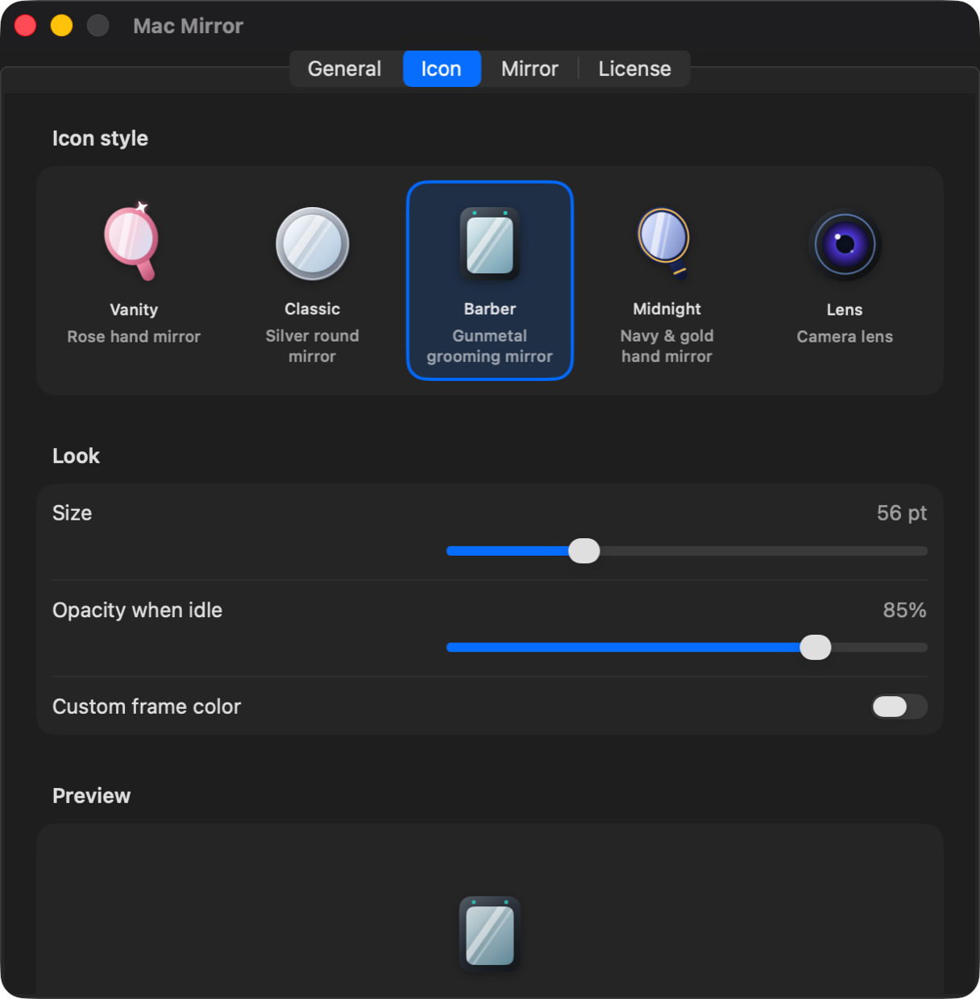
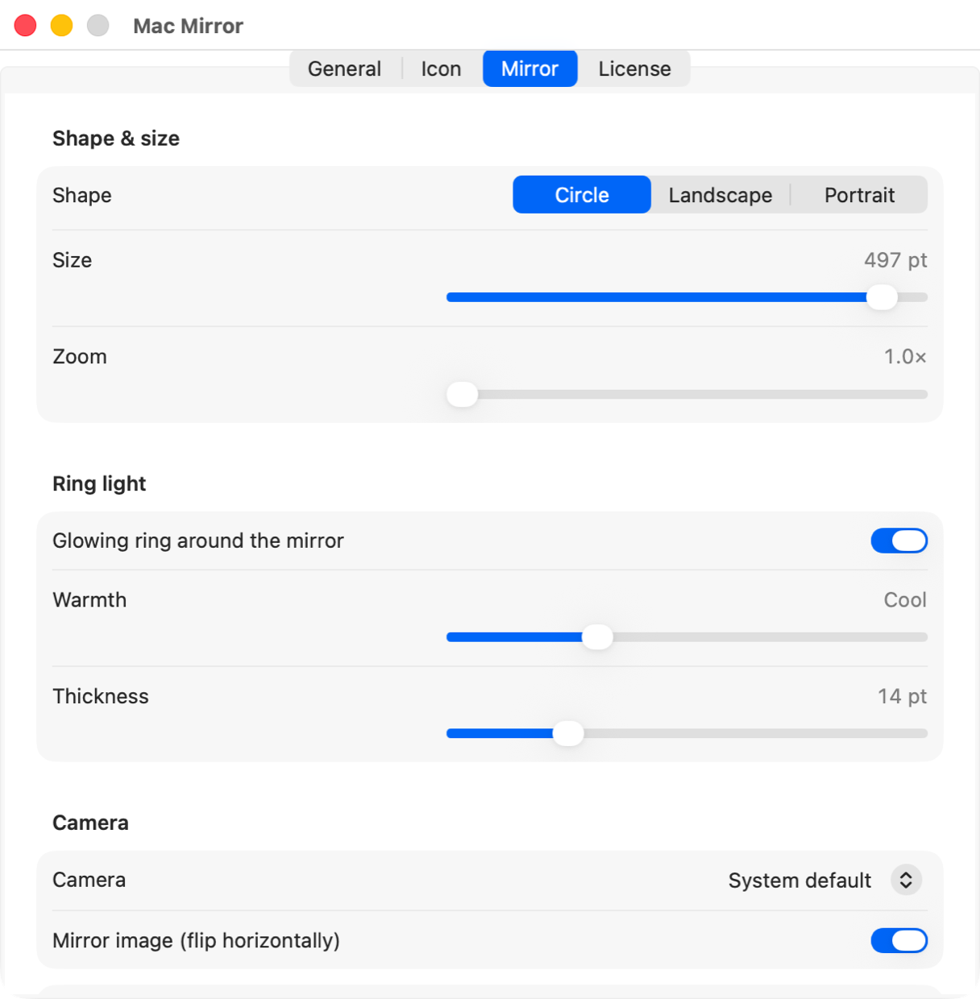
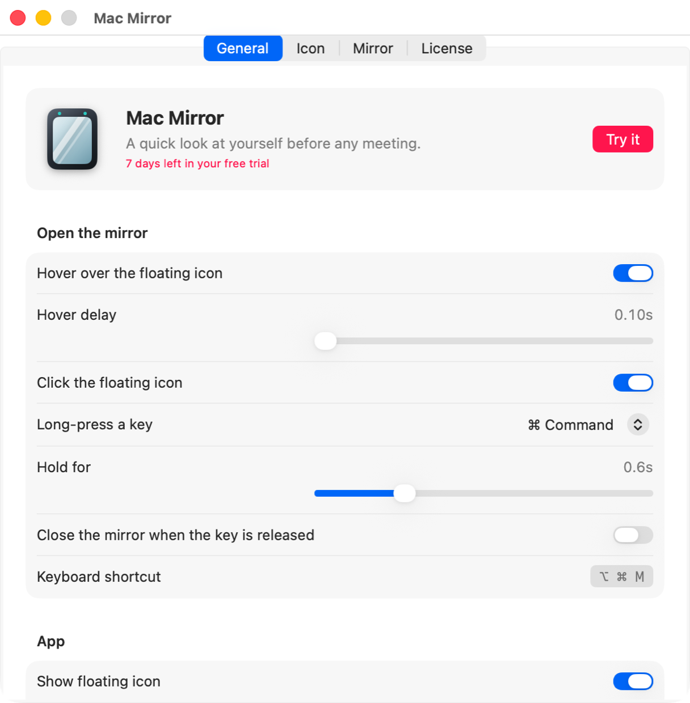
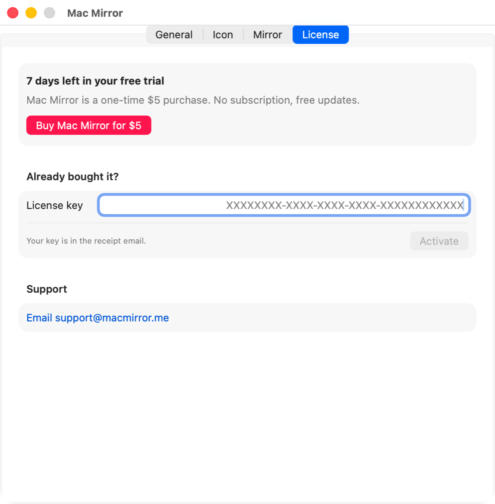

Highlights
- Always one hover away. A small mirror icon floats on top of every app, on every desktop and over full-screen apps.
- Four ways to open it: hover, click, long-press ⌘, or press ⌥⌘M.
- Pops open before every call: link your calendar and get a “😊 Smile!” mirror with a countdown and a Join button, 2 minutes before Zoom, Meet or Teams.
- Built-in ring light that softly lights your face, from cool white to warm.
- Make it yours: 5 icon styles, any frame color, any size, three mirror shapes and up to 2.5× zoom.
- Any camera: built-in FaceTime camera, USB webcams, or your iPhone via Continuity Camera.
- Private by design: the camera only runs while the mirror is open, and video never leaves your Mac.
- Light: a 3 MB native Swift app that uses no CPU while it's idle.
Requirements
- macOS 14 Sonoma or newer. Works on Sonoma, Sequoia and Tahoe.
- Any Mac: Apple Silicon (M1–M5) or Intel.
- A camera: built-in, external, or an iPhone with Continuity Camera.
- Permissions: Camera. Calendar is optional and only needed for meeting mode. No Accessibility, Screen Recording or Input Monitoring needed.
Installation
Option 1: one command (recommended)
Open Terminal (⌘ Space → “Terminal”), paste this and press Return:
curl -fsSL https://macmirror.me/install.sh | bashIt downloads the latest version into Applications and opens it. No security pop-ups. Read the script.
Option 2: DMG
- Download MacMirror.dmg and open it.
- Drag Mac Mirror onto the Applications folder.
- Open it from Applications. On first launch, macOS says it “could not verify” the app, because Mac Mirror is sold directly rather than through the App Store. Click Done, then go to System Settings → Privacy & Security and click Open Anyway.
Quick start
- Click Allow when Mac Mirror asks for the camera.
- Find the floating mirror icon on the right edge of your screen. Drag it anywhere you like.
- Hover over it. Your mirror pops open. Move away and it closes.
- Open Settings from the menu-bar icon (or right-click the floating icon) to choose your style.
Opening the mirror
| Action | What happens |
|---|---|
| Hover over the icon | Opens after a short delay (adjustable 0.1–1.5 s). Closes when your pointer leaves the icon and the mirror. |
| Click the icon | Opens and pins the mirror. Clicking anywhere else, clicking the icon again or pressing ⌥⌘M closes it. |
| Long-press ⌘ | Hold Command on its own (0.3–1.5 s, adjustable). Pressing any other key or clicking cancels it, so ⌘C, ⌘Tab and friends work as normal. You can switch the key to ⌥ or ⌃, turn it off, or make the mirror close when you let go. |
| ⌥⌘M | Toggles the mirror from any app, even with the floating icon hidden. |
Tip: the camera starts warming up while you hover, so the mirror is ready the moment it appears.
Meetings & calendars
Mac Mirror can open itself shortly before your video calls, so you always join looking your best. Meeting mode is in every plan: Mac Mirror watches 1 calendar account, Plus watches all of them. With several accounts on the basic plan, pick the one to use with Use this one.
- Open Settings → Meetings and make sure Pop open before video calls is on.
- Click Allow calendar access.
- Under Link your calendars, click Link Google, Link Outlook / Microsoft 365, Link iCloud or Link Exchange. macOS opens Internet Accounts; sign in there once and turn on Calendars. Already see your calendar in Apple's Calendar app? You're done.
- Pick which calendars to watch and how early to open (1–10 minutes). Click Preview it to see it.
Before each call the mirror pops open with a friendly nudge (“😊 Smile!”, “✨ Looking good”, “😁 Quick teeth check”…), the meeting name, a live countdown and a Join button that opens the call.
| Supported | |
|---|---|
| Calendars | Google, Outlook / Microsoft 365, iCloud, Exchange, and any calendar in Apple's Calendar app |
| Video calls | Zoom, Google Meet, Microsoft Teams, Webex, FaceTime, Slack huddles, Whereby, Around |
Skips all-day events, cancelled events and invites you declined. By default it only opens for events with a video-call link; turn that off to be nudged before every event. Your calendar is read on your Mac and never uploaded.

The floating icon
- Move it: drag it anywhere. It remembers its spot and stays on screen.
- Right-click it for Open Mirror, Hide Floating Icon, Settings and Quit.
- Styles: Vanity (rose hand mirror), Classic (silver), Barber (gunmetal), Midnight (navy & gold) and Lens (camera lens), plus any custom frame color.
- Size & opacity: 36–110 pt, and how see-through it is when you're not using it.
- Hide it if you only use shortcuts. Mac Mirror stays in the menu bar.

The mirror
- Shapes: Circle, Landscape or Portrait.
- Size: 180–520 pt. Zoom: 1×–2.5× for a closer look.
- Ring light: a glowing ring that lights your face. Adjust warmth (cool → warm) and thickness.
- Mirror image: flipped like a real mirror by default. Turn it off to see what others see on a call.
- Camera: pick the built-in camera, an external webcam or your iPhone.
- Close button appears when you hover over the mirror.

Settings, tab by tab
General
Choose how the mirror opens (hover, click, long-press key, delays), show or hide the floating icon and the menu-bar icon, launch at login, and check camera access.

Icon
Pick a style, size, idle opacity and frame color. More above.
Mirror
Shape, size, zoom, ring light, camera and mirroring. More above.
Meetings
Pop open before calls, link calendars, choose calendars and timing. More above.
License
See your trial status, buy, activate or deactivate your license.

Shortcuts & gestures
| ⌥⌘M | Open / close the mirror |
| Hold ⌘ | Open the mirror (configurable key and duration) |
| Before a call | Opens automatically with a countdown and Join button |
| Hover icon | Peek: opens, closes when you move away |
| Click icon | Pin the mirror open |
| Drag icon | Move it anywhere |
| Right-click icon | Quick menu |
Trial & license
- 7-day free trial with every feature, including meeting mode. No account, no card.
- Two plans, both one-time with all 1.x updates: Mac Mirror $5 (1 Mac, 1 calendar account) or Mac Mirror Plus $10 (3 Macs, unlimited calendar accounts). Meeting mode is in both.
- Upgrade anytime for the $5 difference: click Upgrade to Plus in the menu bar or Settings, then activate the upgrade key on the Mac where Mac Mirror is unlocked.
- Your license key arrives by email right after checkout. Paste it into Settings → License with the email you used at checkout, then click Activate. Each key belongs to the person who bought it.
- New Mac? Click “Deactivate on this Mac” first to free a slot, then activate on the new one.
- Once activated, Mac Mirror keeps working offline for up to 14 days at a time; it quietly re-checks your license when you're online.
- 14-day money-back guarantee. See the refund policy.
Privacy
- The camera feed is shown on your screen and nowhere else. Nothing is recorded, saved or uploaded.
- The camera only runs while the mirror is open, so the green camera light tells you exactly when.
- The app has no analytics, no tracking and no account. (The website uses Microsoft Clarity only if you accept cookies.)
- Calendar (optional): read on your Mac to find upcoming calls. Never uploaded or shared.
- The only network request is checking your license key with our payment provider, Dodo Payments.
- Read the full privacy policy.
Troubleshooting
“Apple could not verify Mac Mirror…”
Click Done, then System Settings → Privacy & Security → Open Anyway. Or install with the one-line command, which skips this entirely.
“Mac Mirror is damaged and can't be opened”
You have an old download. Move it to the Trash and install the latest version from the install page.
The mirror is black or says camera access is off
Open System Settings → Privacy & Security → Camera and switch on Mac Mirror. If you picked a specific camera in Settings → Mirror, make sure it's connected.
The mirror doesn't open before my meetings
Check Settings → Meetings: the toggle is on, calendar access says Allowed, and your calendar is ticked under “Calendars to watch”. Make sure the event has a Zoom/Meet/Teams link (or turn off “Only events with a video-call link”). If your calendar isn't listed, link the account with the Link buttons.
I can't find the floating icon
Click the Mac Mirror icon in the menu bar → Show Floating Icon. If you hid both, open Mac Mirror again from Applications to bring up Settings.
Holding ⌘ doesn't open it
Check Settings → General → Long-press a key isn't set to Off. Hold the key on its own without pressing anything else, for at least the “Hold for” time.
My license key doesn't work
Copy it exactly from the email (no spaces) and enter the same email you used at checkout. If it says it's already active on its maximum number of Macs (1 for Mac Mirror, 3 for Plus), deactivate it on the other Mac first. Still stuck? Email support@macmirror.me.
Uninstall
Quit Mac Mirror from the menu-bar icon, drag it from Applications to the Trash. To also remove your settings, run:
defaults delete com.macmirror.appChangelog
- 1.5.0
- Signed and notarized by Apple: no more security warning when you open it, and permissions now stay across updates.
- 1.4.1
- Paste works in Settings.
- 1.4.0
- Updates itself: when a new version is out, a small notice appears under the mirror and one click installs it. Also in the menu bar and Settings › General.
- 1.3.0
- Mac Mirror is officially on sale. Pops open before every meeting, with or without a video link.
- 1.2.1
- Stronger license protection. Activation now asks for your checkout email.
- 1.2.0
- Two plans: Mac Mirror and Mac Mirror Plus. Upgrade anytime. Linked accounts and upcoming calls.
- 1.1.0
- Meeting mode: pops open before video calls with a countdown and Join button. Link Google, Outlook, iCloud and Exchange calendars.
- 1.0.3
- New drag-to-Applications installer window and a one-line installer.
- 1.0.2
- Fixed “Mac Mirror is damaged” on some Macs.
- 1.0.1
- Fixed the mirror not appearing when clicking the icon over full-screen apps.
- 1.0.0
- First release.
Built with Swift, SwiftUI and AVFoundation. Payments by Dodo Payments. Questions? support@macmirror.me